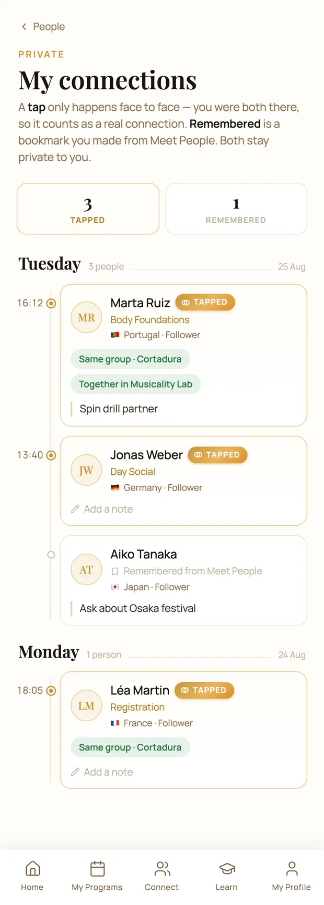
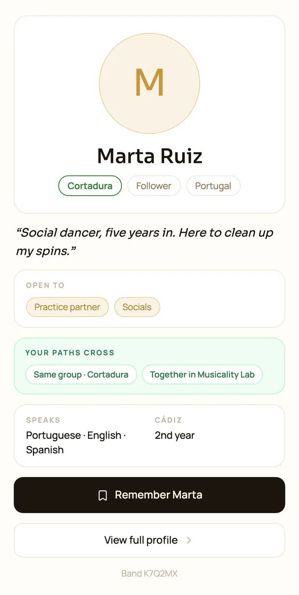

The platform I designed and built for my own event
Bachata Week Cádiz is a training week I founded in 2014. In 2026 I replaced the spreadsheets, forms and WhatsApp threads behind it with one app, designed in code from end to end. Then I opened it up into a two-sided marketplace: dancers on one side, and on the other the teaching artists who sell their own branded courses through it.
Short read
- The problem
- Bachata Week has run since 2014. About 1,500 people apply for 350 places each year, and the 2026 edition brought 400+ dancers from 45+ countries. I ran it on spreadsheets, WhatsApp and a lot of in-person conversations and exceptions. Checking in one guest took about twenty minutes.
- What I designed
A platform that runs the whole event, from application to the last day.
Teachers review and give feedback on every application, and 325 of those reviews are translated into each reader’s own language for under €1. Classes are organised and recommended to each person based on their situation. The logistics cover the schedule, the staff rotation, and an NFC wristband for check-in and for meeting other dancers.
- What I built
- All of it, myself, in five months: about 1,580 commits, 443 merged pull requests and 122 routes. One app shows each person only what they need: guests, reviewers, door staff, teachers and admins. A typecheck and tests gate every change, and 86 colour pairs are checked on every pull request so text stays readable. I also read the data myself, which caught a survey dashboard showing 45 answers when the real count was 72.
- What happened
344 guests checked in over two afternoons, 340 of them linking a wristband. I meant the wristband to help people meet, but only 38% of holders tapped someone, and taps fell from 139 on day one to 35 on day seven. So I made it the way you check in, and moved finding people to a directory, where 56 contacts were saved against 2 taps.
Then I saw a bigger opportunity: the teaching artists had no way to share their classes online. I gave each artist their own web page to sell courses and run online classes, on a design system that carries their own brand (three brands so far). It is now a marketplace, and paying artists are live.

A week like this is a product, but it was being run by hand.
About 1,500 people apply for 350 places each year. Applications, video reviews, group placement, add-on classes, buses, check-in and a schedule that changes daily all ran on spreadsheets, forms and WhatsApp, plus a lot of in-person conversations and exceptions. The registration desk took about twenty minutes a person.
The brief I set myself: one app with a different view for everyone on site, and nothing they need more than two taps away on a phone in a loud room.
One app for the whole event, from application to the last day.
Applications. Expert teachers review every application and give feedback. Most of the dancers reading that feedback do not speak Spanish, so each one reads their review in their own language, translated on demand. 325 reviews cost under one euro.
Classes. The class content is organised in the app, and each person is recommended classes based on their own situation, using simple rules I wrote.
Logistics. The schedule and the staff rotation live in the same app, and door and desk staff each see the view they need. The NFC wristband handles check-in and meeting other dancers.
A walkthrough of the app, in my own words.
I design in the browser, with AI as my pair.
Each feature starts as two or three options side by side. I pick one, write down why, and it becomes components, tests and a pull request. I own the product decisions, the interaction design and the data model. Claude Code writes much of the implementation, inside guardrails I set: design tokens it cannot bypass, tests it has to pass, and nothing deploys without my OK.
One example. After the event, the feedback dashboard said 45 people had answered the survey. I knew more had. The database only sends back 1,000 records at a time, and with 2,291 answers the dashboard had silently cut off the rest. The real count was 72. Now every admin view pages through every row.
Code that runs without errors is not the same as code that is right, and checking that is my job.
I watched what people did, then changed the app to match.
The noticeboard I cut
The first version tried to replace the event’s WhatsApp group, where conversations did not last. It had a noticeboard for shared rooms, lifts and everything else. After testing it with people, I removed it.

The wristband found its real job
Everyone wears an NFC band. It holds no data, it just opens the right screen for whoever taps it. At the door, a desk that used to take about twenty minutes a person checked in 344 arrivals over two afternoons, and 340 of them linked a band.
On the dance floor it did less. 38% of holders tapped someone, taps fell from 139 on day one to 35 on day seven, and after the week people saved 56 contacts from the directory against 2 taps. So I let the band be the moment you arrive, and moved finding people again to the directory.

That is what made it worth taking on the road. Every festival already buys entry wristbands. At Pulse London (Oct–Nov 2026), ours is the official one.
A tap is a meeting. A bookmark is not.
"My connections" is a diary of the week. A tap happened in person, so it gets a filled dot, the time and the room. A bookmark from the directory gets a hollow dot and no time, because its timestamp is only when you were scrolling.
"Remember" is private: the other person is never told. "Connected" is worked out from your own rows only, so the app can never reveal that someone remembered you, or that you were not remembered back. All screens use example data.


The teaching artists wanted to teach online too.
Running the event, I saw that the teachers had a need of their own. They are experts in dance, not in technology, and they wanted to record their sessions and sell them.
So I opened the platform up. Each artist gets their own web page to sell courses and run online classes, and dancers get one home that stays open between editions. That is what turned the event app into a two-sided marketplace.
I stopped building pages and built a kit.
Once artists started selling their own courses, their pages had to look like them, not like my event. Adding an artist is now one entry of data: colours named by their job, corner shape, fonts and language. Ángel’s page is in Spanish all the way down, and a missing translation is caught by the code before it ships, not found by a user as a blank button.

Accessibility enforced by tests
An artist can have their own colours, but not unreadable ones. Every pull request checks 86 colour pairs across all palettes. Text must meet the WCAG AA standard for readability, and icons a 3:1 contrast ratio. My own brand gold reached only 2.6:1 as link text, so it is now two colours: one for decoration, one for words. The one gap left, a faint grey at 3.5:1, is pinned so it can only improve.
A video and a play button is not a dance lesson.
The player mirrors the teacher, drops to half speed, loops a few seconds while you drill, opens your camera beside the teacher, and splits each lesson into timestamped notes.

Selling across borders. The number on the page is the number you pay, wherever you are. Prices include tax, Stripe Tax works out each country’s share at checkout, and US visitors see a fixed dollar price. Behind it is a real question I worked through: a UK company selling digital courses to consumers across the EU, with VAT due at each buyer’s local rate.
The week ends, but the platform does not.
It is now a marketplace that runs all year. Dancers sign in to one home that stays open between editions, and teaching artists sell their own courses through it, on their own branded pages. Paying artist clients are live. Next, the app will know which festivals your people are going to, so the band you tapped in Cádiz becomes the reason you find each other in London.